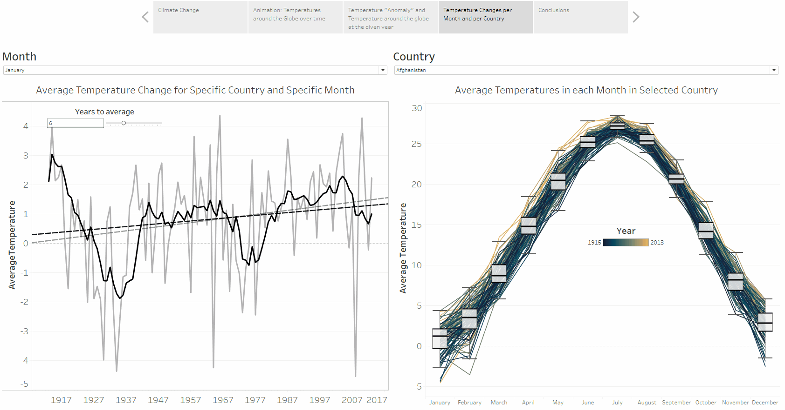

Global Temperatures
Here is an example that shows Temperature variations thorugh time for a given month. Multiple dashboards on the topic of Global Temberature can be found on my Tableau profile.
I explored how monthly average temperature is changing over a period of around ~100 years, which I visualised per selected month and country (left side), and per selected country (right side). It is evident that the average temperature has positive increasing trend for most countries and a given month. Data used in this visualisation comes from Berkley Earth. and they are obtained from Kaggle. Since the gif is quite small, I recommend viewing live Tableau version here..

World Happiness
Here is a dashboard that shows World Happiness, the entire Tableau dashboard can be found on my Tableau profile.
I explored the average World Happiness Score and its change during past 5 years. Data used in this visualisation are from Kaggle..